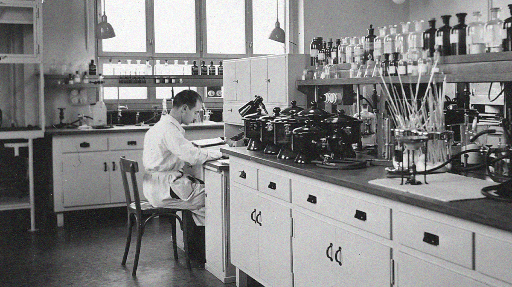
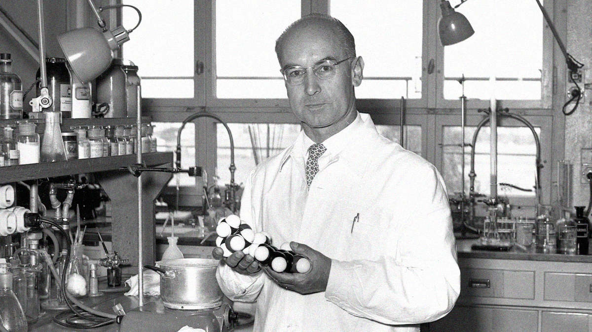
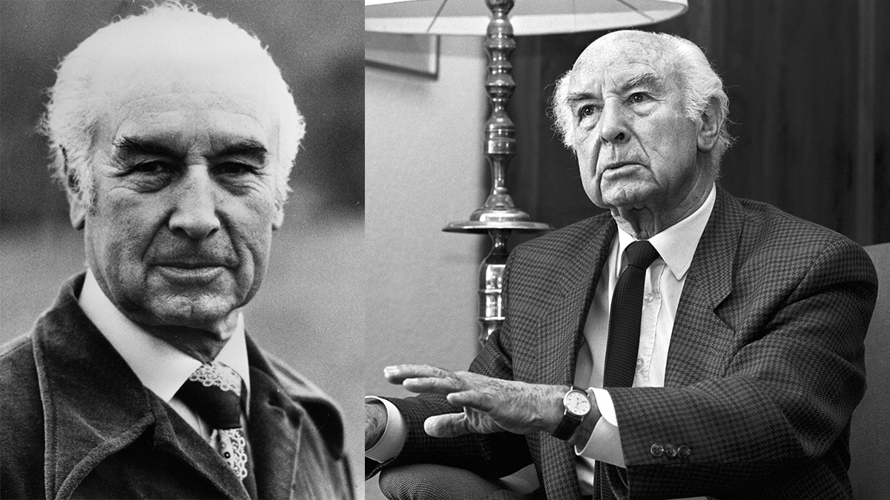

History
1938
The story of LSD begins with Albert Hofmann, a Swiss-born chemist. In 1938, Hofmann was working at Sandoz Laboratories, studying the medical plant Drama maritime as well as ergot fungus, as part of a program to synthesize and purify the active constituents to be used as pharmaceuticals. When experimenting on creating respiratory and circulatory stimulants, Hofmann synthesized lysergic acid diethylamide (LSD).

1943
5 years after his initial discovery, Hofmann accidentally ingested LSD through his fingertips and felt a sudden change of consciousness:
“affected by a remarkable restlessness, combined with a slight dizziness. At home I lay down and sank into a not unpleasant intoxicated-like condition, characterized by an extremely stimulated imagination. In a dreamlike state, with eyes closed (I found the daylight to be unpleasantly glaring), I perceived an uninterrupted stream of fantastic pictures, extraordinary shapes with intense, kaleidoscopic play of colours.”
3 days later, Hofmann self-experimented, dosing himself with .25 milligrams of LSD, assuming that would be a threshold dose. One hour later, Albert Hofmann was experiencing the first LSD trip. After his trip, Hofmann knew he had discovered something of significance, that LSD a psychoactive substance with extraordinary potency, capable of causing significant shifts of consciousness in incredibly low doses.
What is a threshold dose?

1949
Because of how intense and introspective LSD is, Hofmann believed it was the perfect tool for psychiatric use. LSD was introduced as a commercial medication, Delysid, for various psychiatric uses in 1947, and brought to the United States in 1949.

Later years
After Hofmann's discovery, he spent the rest of his life as an advocate for LSD and its powerful, therapeutical and spiritual benefits for individuals. He felt that LSD was medicine for the soul. On April 29th, 2008, Albert Hofmann passed away at the age of 102.